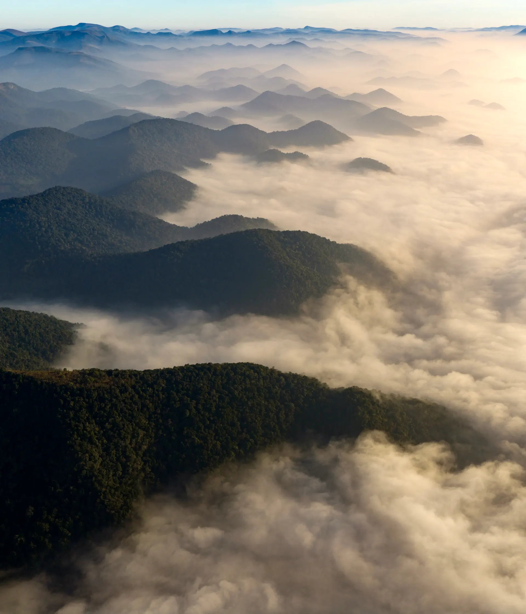
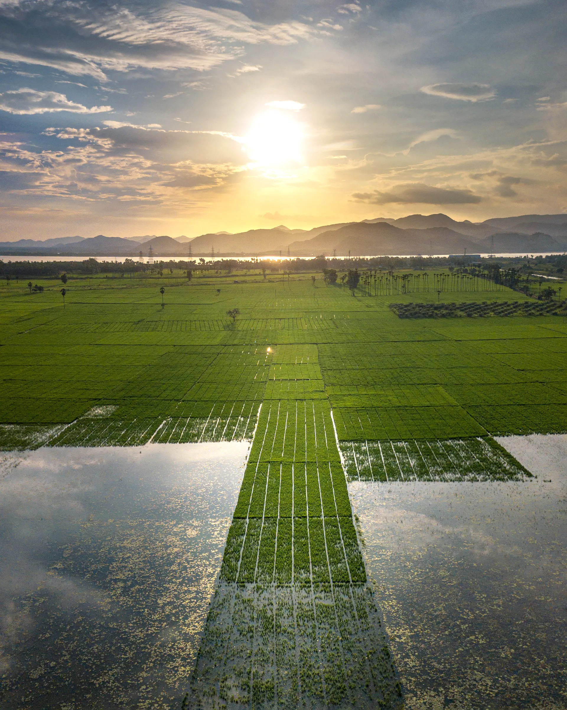

follow the river ↴
seven stops, one week
తూర్పు గోదావరి
EAST
GODAVARI
One river, and everything it grew. Seven places you will not forget.
Enter the full site

follow the river ↴
seven stops, one week
తూర్పు గోదావరి
One river, and everything it grew. Seven places you will not forget.
Enter the full site